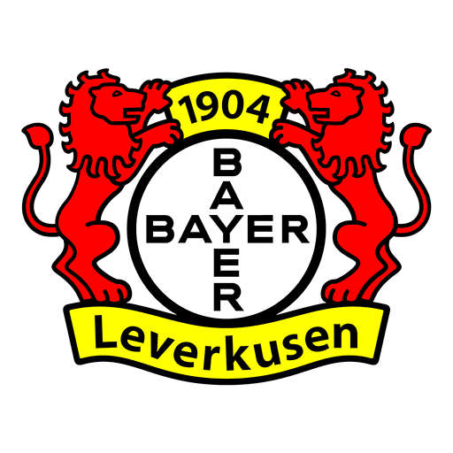

Leverkusen
Nombre completo: TSV Bayer 04 Leverkusen e.V.
Apodo: Werkself (equipo de fábrica)/Löwen (leones)
Fundacion: 1904
Ciudad: Leverkusen, Renania del Norte-Westfalia
Estadio: Estadio BayArena
TITULOS

DFB Pokal
1
1992/93

UEFA Europa League
1
1987/88
ESTADIO
Nombre: Estadio BayArena
Fundacion: 1958
Ciudad: Leverkusen, Renania del Norte-Westfalia
Capacidad: 30.210 espectadores